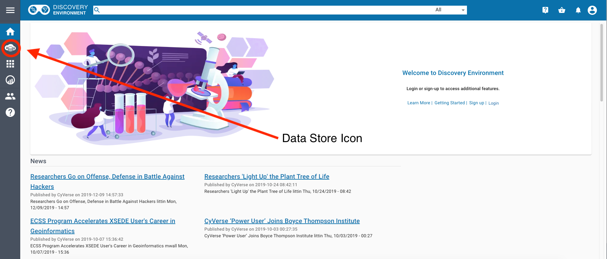
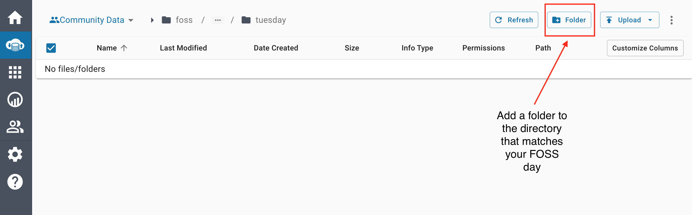
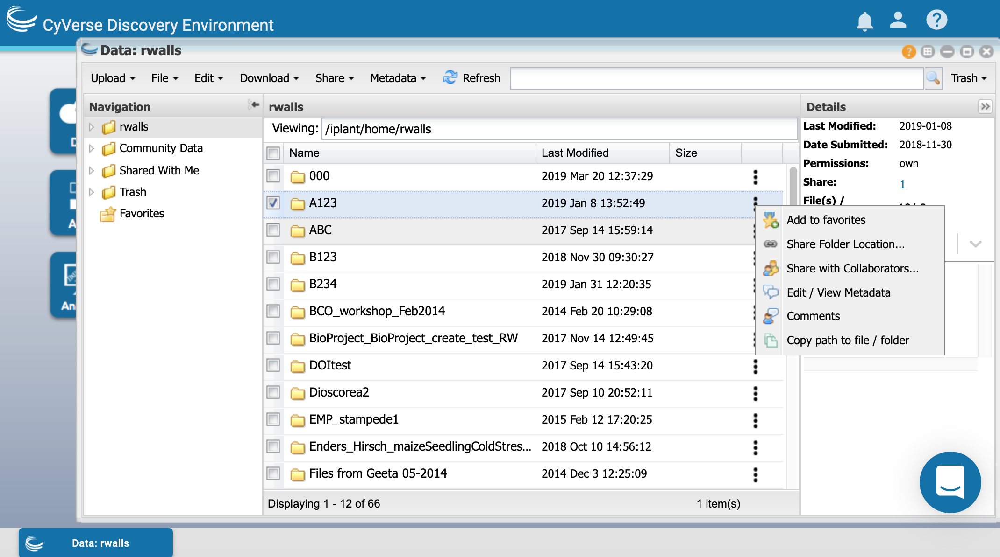

Discovery Environment - Data Management¶

DE2 Data Store Walkthrough¶
Log in at https://de2.cyverse.org/
learning objectives
Recognize the data store environment and how to navigate it
Use data store through GUI to interact with community datasets
Describe how to create a directory in the data store
Data Window

Community Data on DE2
Changing Locations on DE2

Sorting Folders in DE2

Navigate to the FOSS Folder
The folder is inside Community Data and called foss
Which contains:

Creating Folders in the Data Store
Navigate to the spring-2021 folder, you should see the following:

Inside the folder that matches the day that you attend FOSS, create a folder that matches your CyVerse username.

What can we do with this?
Question
In small groups discuss the following questions:
How might you use the Data Store in your work?
Does the data store allow your data to be FAIR?
What is one way you could use the data store in FOSS for your group work?
Leave Feedback on the DE2 Layout and User Interface¶
Classic DE Data Store Walkthrough¶
Log in at https://de.cyverse.org/

Data Window
Open the data window and upload a file:

Create a new text file and share it with someone in the class:

Download the shared file.
Using metadata in the Classic DE
Search for data in the DE:
Try a simple search for the word “maize”
Try an advanced search for attribute = subject and value = maize
- Other options to be covered on Tuesday:
Advanced Metadata Usage in Classic DE
The Data Commons provides advanced metadata features in the Discovery Environment, including:
Exercise: - Open the DE - Apply a Plant Ontology template to a folder. - Apply an ontology term to a file or folder.
Exercise: 1. Copy the B123 file to your home directory - Using icommands:
$ icd /iplant/home/$username
$ icp -r /iplant/home/rwalls/B123 B123
$ ils
In the DE:
create a folder in your home directory called B123
Move into B123
Upload >> Import from URL…
paste each of the URLs below into a slot. This must be done in two batches.
https://raw.githubusercontent.com/CyVerse-learning-materials/foss-2020/master/slides/B123/012.txt https://raw.githubusercontent.com/CyVerse-learning-materials/foss-2020/master/slides/B123/123.txt https://raw.githubusercontent.com/CyVerse-learning-materials/foss-2020/master/slides/B123/234.txt https://raw.githubusercontent.com/CyVerse-learning-materials/foss-2020/master/slides/B123/345.txt https://raw.githubusercontent.com/CyVerse-learning-materials/foss-2020/master/slides/B123/456.txt https://raw.githubusercontent.com/CyVerse-learning-materials/foss-2020/master/slides/B123/567.txt https://raw.githubusercontent.com/CyVerse-learning-materials/foss-2020/master/slides/B123/678.txt https://raw.githubusercontent.com/CyVerse-learning-materials/foss-2020/master/slides/B123/789.txt https://raw.githubusercontent.com/CyVerse-learning-materials/foss-2020/master/slides/B123/Rice_metadata.csv
2. Apply metadata - In the DE apply the DE apply metadata to the contents of B123
Browse to B123
View the metadata for one of the files using the Metadata menu or the three dots (it should be blank)
View the contents of the file Rice_metadata.csv
Browse back to your home directory
Check the box next to B123
Select Metadata > Apply Bulk Metadata
Select the file B123/Rice_metadata.csv
Browse back to B123
View the metadata of the different files in the directory
3. Advanced search - Click on the search magnifying glass - Click + - Change File Name to Metadata - Under Attribute, type treatment, under Value type cold - Hit Search
Additional Resources¶
Fix or improve this documentation:
On Github: Github Repo Link
Send feedback: Tutorials@CyVerse.org